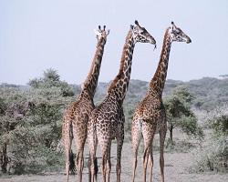

Zürafalar saatte 60 km'yi bulan hızlarla tekme atabilirler. Bu yüzden
insandan sonra tek doğal avcıları aslanlar, zürafalara yaklaşmakta oldukça
temkinli davranırlar. Bunun dışında erkekleri çok güçlü ve kaslı boyunları
ile kendilerine has bir çiftleşme kavgası yaparlar. Bu kavgalar esnasında
ölümler çok nadir de olsa zaman zaman rakipler bayılabilir. Ayrıca su içerken
oldukça savunmasızlardır. Su içmek için ön bacaklarını ayırıp boyunlarını aşağı eğmeleri gerekir.